Explore Seville
A Brief History
Seville developed as a Roman port on the Guadalquivir and later capital of Muslim al-Andalus under the Almohads before Christian reconquest in 1248. Its cathedral, alcázar, and archive of the Indies grew with Atlantic commerce after 1492, when the city licensed voyages to the Americas. Plaza districts, watchtowers, and parish churches record civic life in Andalusia's largest city.
Attractions Map
Top Sights & Activities
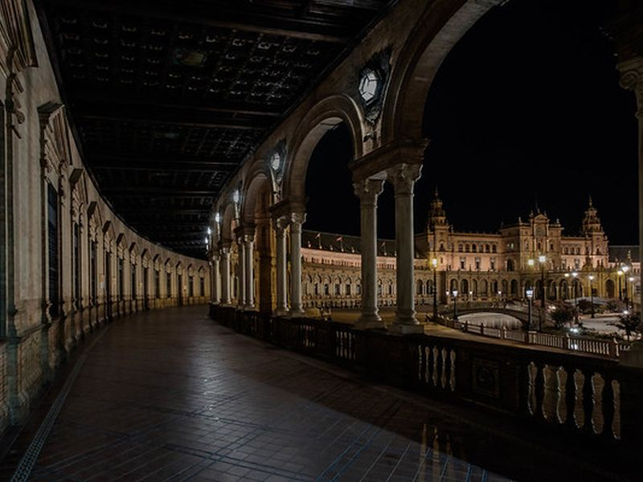
Plaza de España
Plaza de España was built for the Ibero-American Exposition of 1929 in María Luisa Park. Aníbal González designed the semicircular complex with tiled alcoves representing Spanish provinces, a canal, and bridges. The plaza combines Regionalist architecture with ceramic decoration along the park edge.
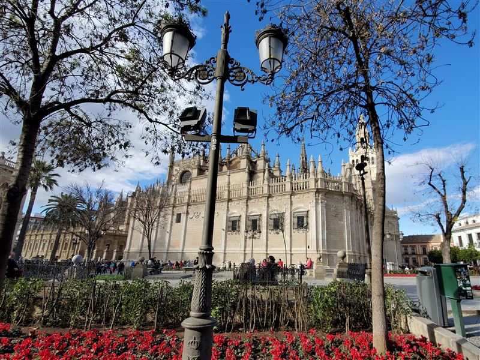
Catedral de Sevilla
Seville Cathedral was built from 1401 on the site of the Almohad mosque after reconquest. Its Gothic volume and Giralda bell tower incorporate the former minaret. The church houses the tomb of Christopher Columbus and remains the seat of the Archbishop of Seville.
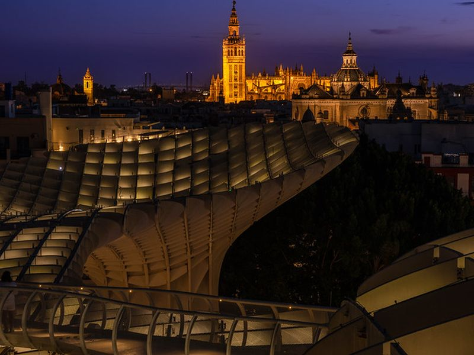
Iglesia Colegial del Divino Salvador
El Salvador is a parish church on Plaza del Salvador rebuilt in Baroque style in the 17th and 18th centuries on earlier mosque and church foundations. Its interior retablo and dome illustrate Seville's post-reconquest religious architecture in the dense historic center north of the cathedral.
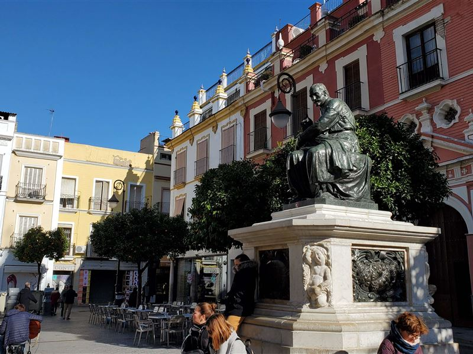
Quiosco plaza del Salvador
The bandstand on Plaza del Salvador provides a focal point in one of Seville's older commercial squares. The plaza developed around the parish church and market streets of the medieval center. Outdoor seating and events use the open space between historic facades.
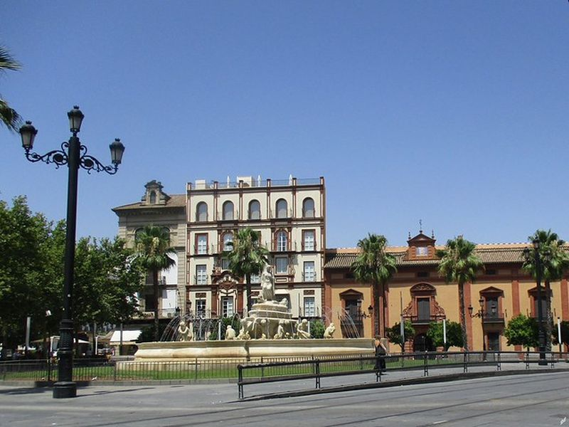
Fuente de Híspalis de Puerta de Jerez
The Hispalis fountain stands at Puerta de Jerez near the entrance to María Luisa Park. Installed in the early 20th century, it references the Roman name for Seville and decorates a traffic junction beside historic city gates. The square connects the old center with the park and riverfront.
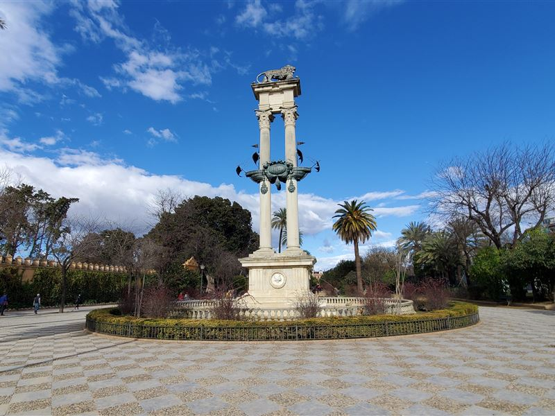
Christopher Columbus Monument
The Columbus monument rises at the center of Plaza de Colón near the Guadalquivir embankment. Erected in the early 20th century, it commemorates the explorer's association with Seville and Atlantic voyages. The column and surrounding gardens mark a ceremonial space between the historic center and river.
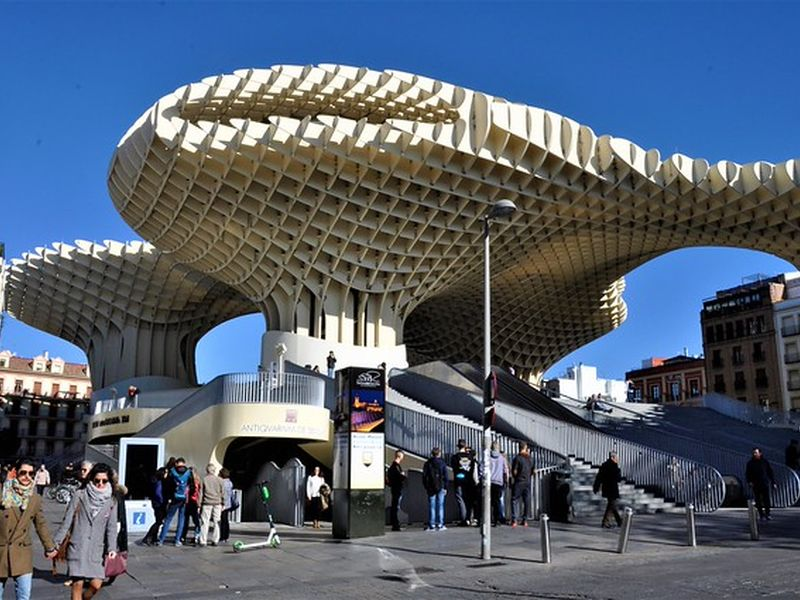
Setas de Sevilla
Setas de Sevilla is a contemporary wooden structure by Jürgen Mayer over Plaza de la Encarnación. Completed in 2011, its walkways and viewing platforms rise above Roman and medieval remains displayed in the archaeological museum below. The installation reshaped a central square in the old town.
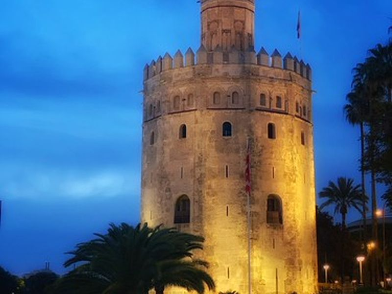
Torre del Oro
Torre del Oro is a 13th-century Almohad watchtower on the Guadalquivir riverbank. It once anchored a chain barrier across the river protecting the port. The tower now houses a maritime museum and offers views along the waterfront toward the Triana district.
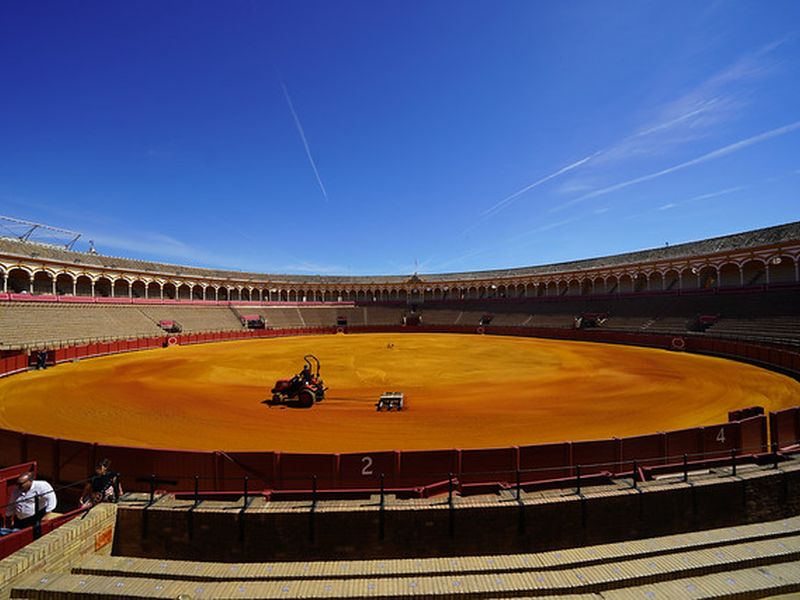
Plaza de Toros de la Real Maestranza de Caballería de Sevilla
La Maestranza bullring was built in the 18th century for the Royal Cavalry Corps of Seville. Its Baroque facade and oval arena remain an active venue for corridas during the April Fair season. A museum presents the history of bullfighting in Andalusia.
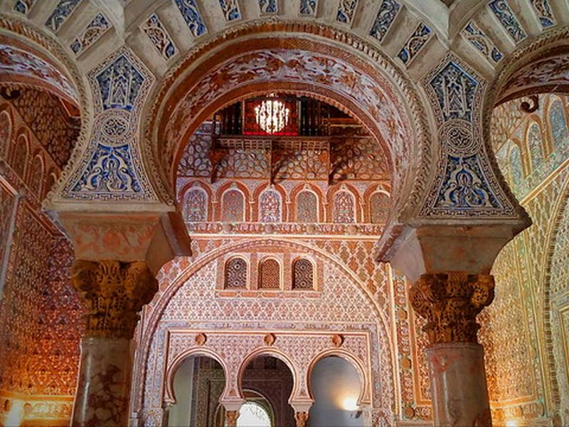
Royal Alcázar of Seville
The Alcázar of Seville began as a Muslim fortress and was expanded by Christian kings in Mudéjar style from the 14th century. Palaces, patios, and gardens record court life under Pedro I and later monarchs. The complex remains a royal residence and UNESCO World Heritage Site.
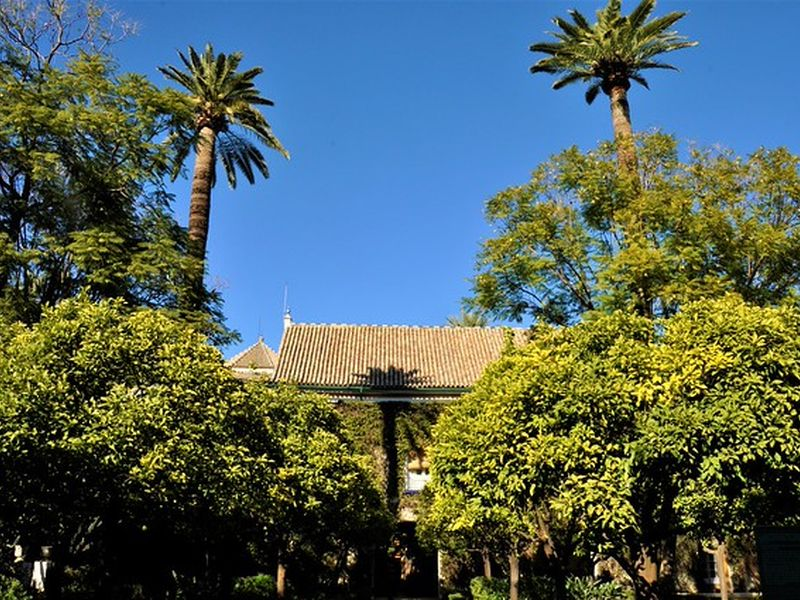
Palacio de las Dueñas
Palacio de las Dueñas is a 15th-century noble house with later additions in central Seville. Its patios, chapel, and collections belonged to the House of Alba and include art and memorabilia linked to the family and city society. Guided visits cover rooms arranged around flower-filled courtyards.
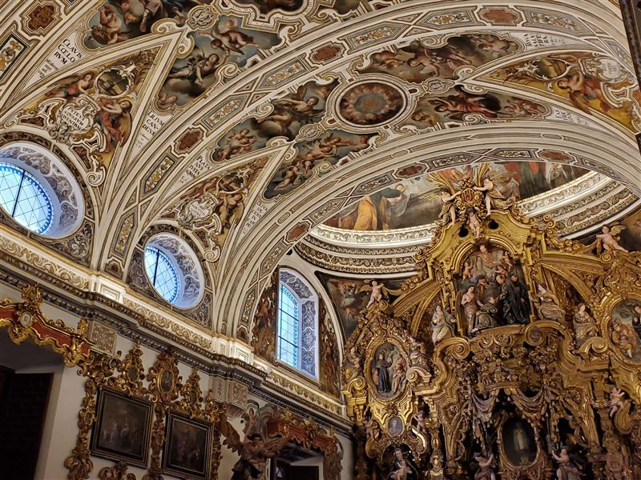
Iglesia de San Luis de los Franceses
Iglesia de San Luis de los Franceses is a Baroque church and former Jesuit novitiate completed between 1699 and 1731 to designs by Leonardo de Figueroa. The Diputación de Sevilla has owned the complex since the 19th century. Its church, crypt, and novitiate rooms preserve Spanish Baroque architecture on Calle San Luis, northwest of the cathedral quarter.